Aquila
- Jan to Mar 2025
- Team of 3
- NSBE Boeing Flight Competition
- Fusion 360
Overview
I designed and built a balsa wood glider, Aquila, for the NSBE Boeing Flight Competition. The glider was limited to a single 3 by 36 inch sheet of balsa. We could assemble it with glue, rubber bands, and tape only. It had to carry a payload of two U.S. quarters and launch from a rubber-band mechanism. As part of a 3-person team, I focused on flight distance, stability, payload capacity, and structural durability.
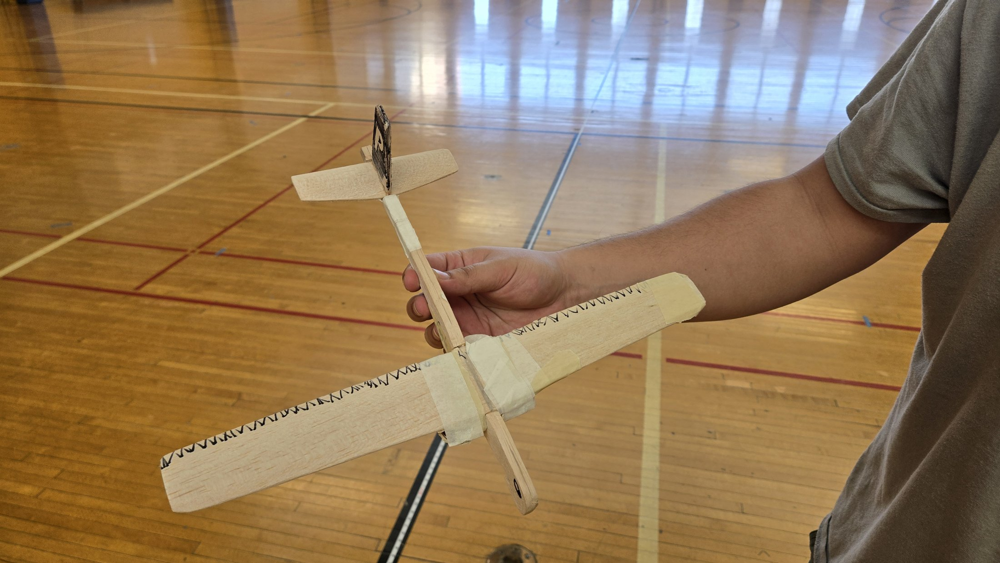
Top view
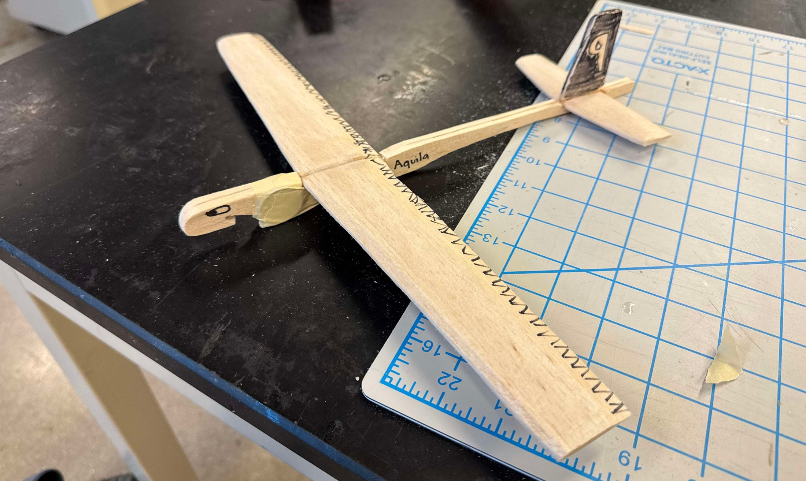
Side view
Why it matters
A glider this light breaks easily, and every failed test costs time. I learned to find a design's weak point quickly and fix it before the next test. That habit carries over to any product that has to survive real use.
Process
We started by researching existing balsa glider plans and core aerodynamics principles. That covered wing shape, dihedral versus anhedral angles, and tail configurations.
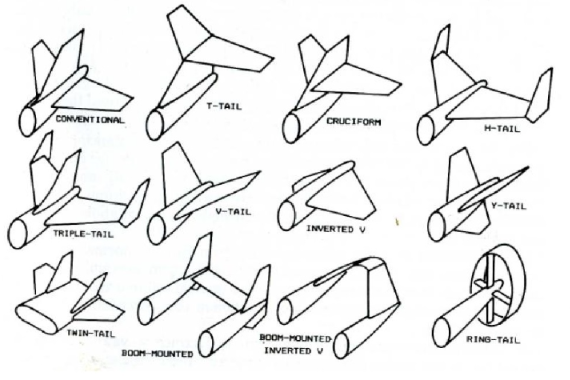
Tail configurations
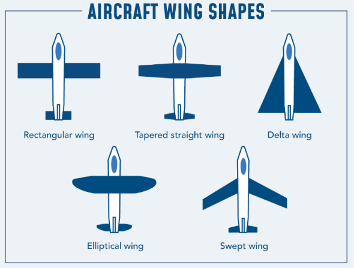
Aircraft wing shapes
Design 1: Prometheus
The first design used a V-tail, a high-dihedral wing, inverse-swept wings, and winglets. It was very light because of its thin body.
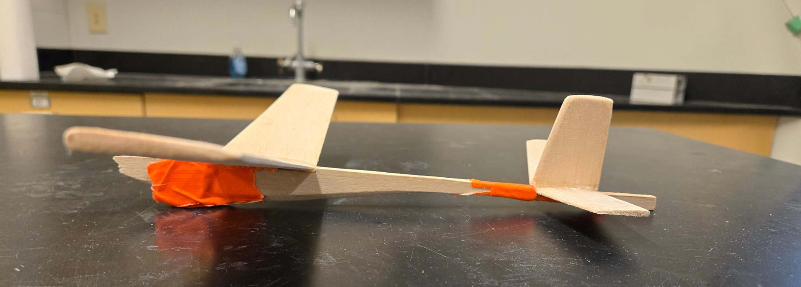
Prometheus glider
- The body was too thin, so a collision with the group split it into 4 pieces during repeated tests.
- The back wings were a point of failure, with sharp edges.
- The sling notch cracked under load.
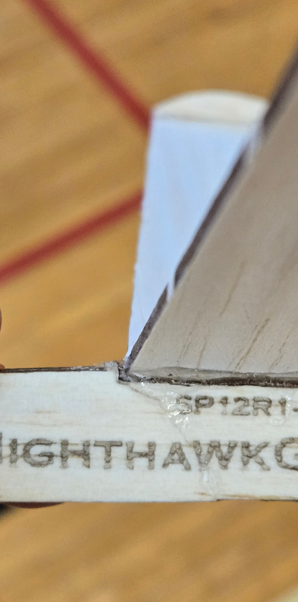
Failure point 1
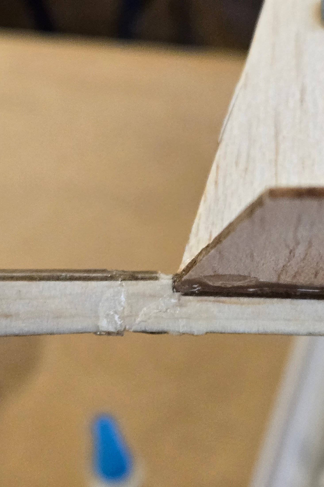
Failure point 2
Design 2: Ithaca
The second design used dihedral wings, a thicker body, and no inverse orientations. We ran 3 trials on this prototype, 2 by hand and 1 by elastic. Each time the glider had great lift, but an asymmetry in the tail made it unstable.
The asymmetry caused very sharp turns. To reduce them, we moved weight to the opposite side of the plane. That fix caused a new problem, and the glider dipped a few seconds after takeoff.
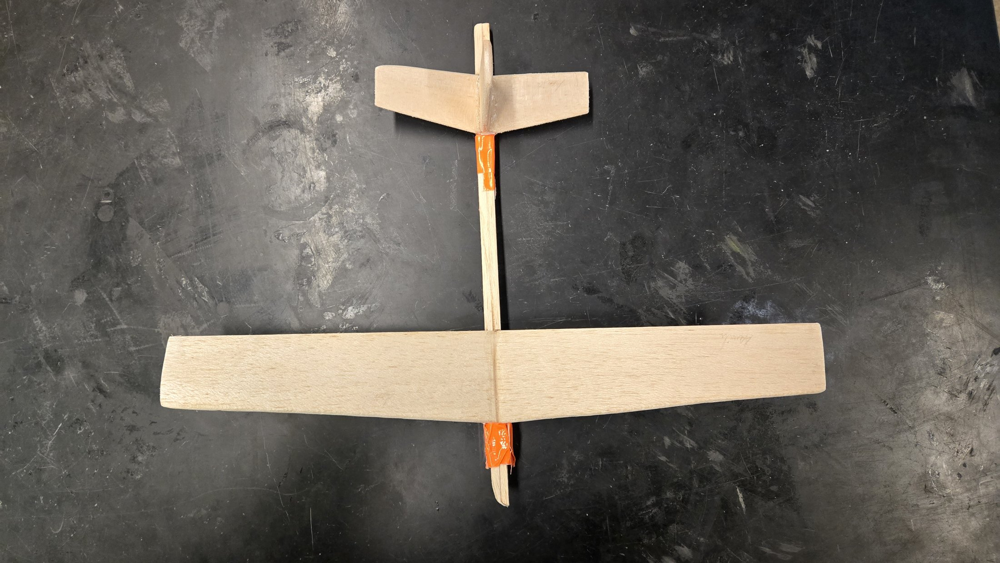
Final design: Aquila
The final design used a tapered, dihedral high wing and a conventional tail with vertical and horizontal stabilizers. It used 3/8 inch balsa, a two-part fuselage, and rounded edges to reduce stress points. I also designed a dihedral wing assembly fixture and 3D printed it.
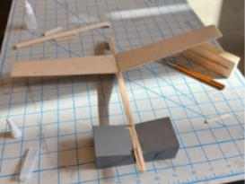
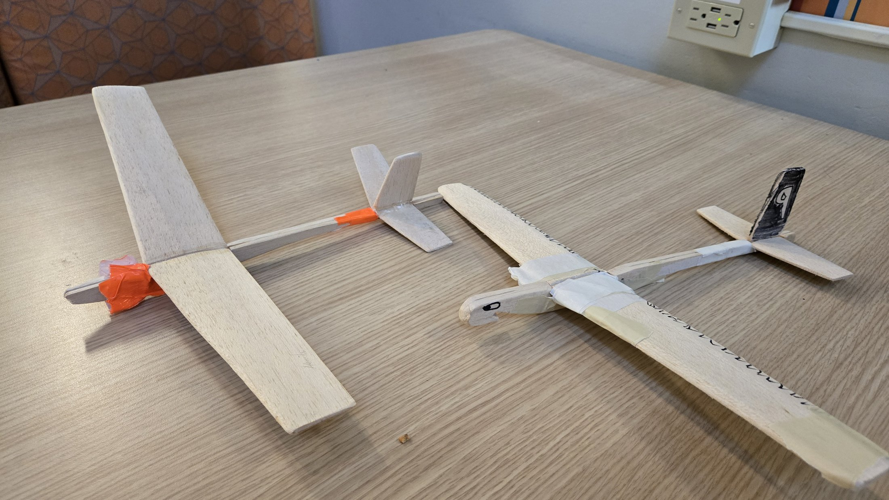
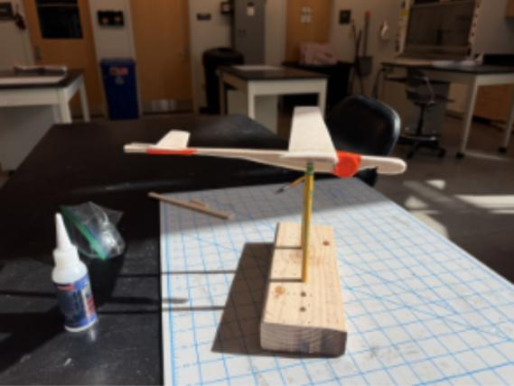
Aquila balancing
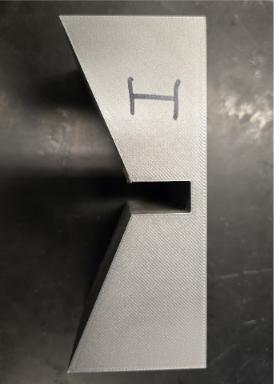
Dihedral wing assembly fixture
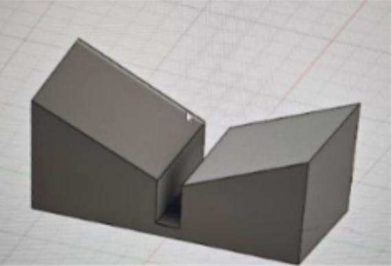
Dihedral wing fixture CAD model
Results
Aquila flew three consecutive test flights. That was an improvement in consistency and distance over both earlier prototypes. It also met all competition constraints on material, payload, and launch mechanism.
Thanks to Professor Crossley and Tom Bietsch for their guidance.